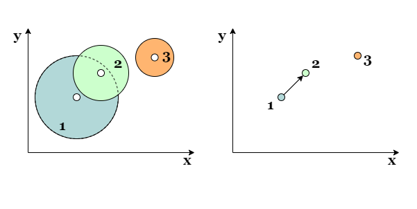
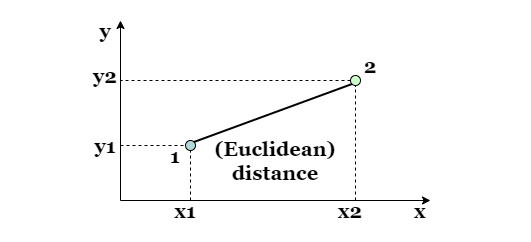
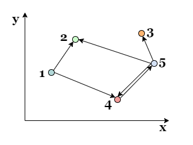
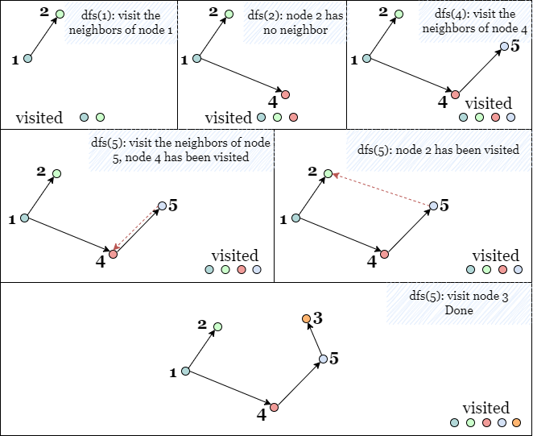
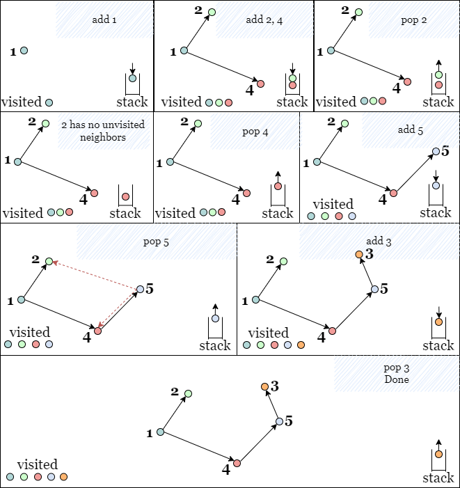
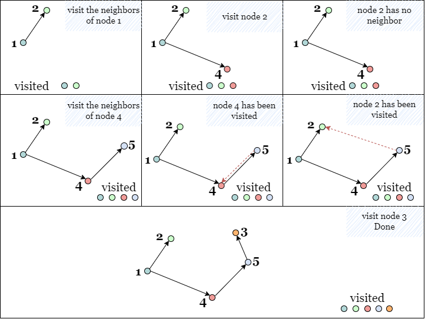

We can transform the map of bombs into a graph by representing each bomb i as a node i in
the same location. The equivalent of bomb 1 detonating bomb 2 is a directed edge from node 1 to node 2.

To determine whether bomb 1 detonates bomb 2, we can compare the Euclidean distance between their centers and the radius of bomb 1. If the distance is less than or equal to the radius of bomb 1, then bomb 1 can detonate bomb 2. Note that this relationship is not commutative: bomb 1 detonating bomb 2 does not necessarily imply the converse is also true.

distance2=(x1−x2)2+(y1−y2)2\text{distance}^2 = (x_1 - x_2)^2 + (y_1 - y_2)^2
Therefore, the original problem can be transformed into a graph traversal problem where we calculate the total number
of reachable nodes from each node i.
Starting with building the graph, we need to traverse each pair of two distinct bombs (i, j) to check if
bomb i detonates bomb j. If so, we create a directed edge from node i to node
j. We consider all different pairs of nodes, and note that two pairs of the same bombs in
different orders are considered to be different. In short, we consider both (i, j) and
(j, i).

Each of the following methods begins with the building process above.
If you are not familiar with depth-first (DFS) search, please refer to our explore cards Depth-First Search Explore Card. We will focus on the usage in this article and not the implementation details.
In DFS, we explore nodes as far as possible along each branch. Upon reaching the end of the current branch, we backtrack to the next possible branch and continue exploring. Once we encounter an unvisited node, we take one of its neighbor nodes (if it exists) as the next node on this branch. Recursively call the function to the next node and solve the subproblem. If we reach the end of this branch, we backtrack to the previous node and visit the next neighbor node (if it exists), and repeat the process.
We can use a hash set visited to keep track of all the visited nodes. Initially, visited is
empty. When we find an unvisited neighbor node, we can add it to visited so it won't be visited
anymore.
At the end of the DFS, we can return the size of visited as the number of visited nodes (detonated
bombs).

We will perform the DFS from each node and update answer as the maximum number of reachable nodes
starting from each node.
Initialize answer as 0.
Create hash map graph containing all directed edges corresponding to the detonation
relationships between all bombs.
Create an empty hash set visited.
Define a recursive function dfs(cur) to recursively find all reachable nodes from node
cur:
cur to visited.dfs(neib) on each unvisited neighbor of cur.Repeat from step 3 for each node i and update answer as the maximum size of visited
after each DFS.
Return answer when all DFS operations are complete.
Java
class Solution {
public int maximumDetonation(int[][] bombs) {
Map> graph = new HashMap<>();
int n = bombs.length;
// Build the graph
for (int i = 0; i < n; i++) {
for (int j = 0; j < n; j++) {
if (i == j) {
continue;
}
int xi = bombs[i][0], yi = bombs[i][1], ri = bombs[i][2];
int xj = bombs[j][0], yj = bombs[j][1];
// Create a path from node i to node j, if bomb i detonates bomb j.
if ((long)ri * ri >= (long)(xi - xj) * (xi - xj) + (long)(yi - yj) * (yi - yj)) {
graph.computeIfAbsent(i, k -> new ArrayList<>()).add(j);
}
}
}
int answer = 0;
for (int i = 0; i < n; i++) {
int count = dfs(i, new HashSet<>(), graph);
answer = Math.max(answer, count);
}
return answer;
}
// DFS to get the number of nodes reachable from a given node cur
private int dfs(int cur, Set visited, Map> graph) {
visited.add(cur);
int count = 1;
for (int neib : graph.getOrDefault(cur, new ArrayList<>())) {
if (!visited.contains(neib)) {
count += dfs(neib, visited, graph);
}
}
return count;
}
}
Python3
class Solution:
def maximumDetonation(self, bombs: List[List[int]]) -> int:
graph = collections.defaultdict(list)
n = len(bombs)
# Build the graph
for i in range(n):
for j in range(n):
if i == j:
continue
xi, yi, ri = bombs[i]
xj, yj, _ = bombs[j]
# Create a path from node i to node j, if bomb i detonates bomb j.
if ri ** 2 >= (xi - xj) ** 2 + (yi - yj) ** 2:
graph[i].append(j)
# DFS to get the number of nodes reachable from a given node cur
def dfs(cur, visited):
visited.add(cur)
for neib in graph[cur]:
if neib not in visited:
dfs(neib, visited)
return len(visited)
answer = 0
for i in range(n):
visited = set()
answer = max(answer, dfs(i, visited))
return answer
Let nn be the number of bombs, so there are nn nodes and at most n2n^2 edges in the equivalence graph.
Time complexity: O(n3)O(n^3)
Space complexity: O(n2)O(n^2)
graph.
dfs contains also takes nn space.
We can also implement DFS iteratively using a stack to replicate recursive self-calls to dfs. Since the
operations on a stack are performed in First In, Last Out (FILO) order. Therefore, the top node on the stack always
leads to the next branch: whenever we reach the end of the current branch, we can get the node on the top of the
stack and move along the branch that starts from it.
A hash set visited is used to store all the visited nodes, so we don't need to take them into account.
Once we add an unvisited node to the stack, we immediately add it to visited to prevent it from being
revisited later.

Similarly, we will perform the DFS from each node i, and update answer as the maximum
number of reachable nodes starting from each node.
Initialize answer as 0.
Create a hash map graph containing all directed edges corresponding to the detonation
relationships between all bombs.
Define a function dfs(i) that iteratively finds all reachable nodes from node i.
stack and an empty hash set visited.i to stack and visited.stack is not empty, pop up the top element cur.cur has any unvisited neighbor nodes, and if so, add them to visited
and stack and repeat the previous step.
visited.Call dfs on every node i and update answer as the maximum size of
visited.
Return answer when all DFS operations are complete.
Java
class Solution {
public int maximumDetonation(int[][] bombs) {
Map> graph = new HashMap<>();
int n = bombs.length;
// Build the graph
for (int i = 0; i < n; i++) {
for (int j = 0; j < n; j++) {
if (i == j) {
continue;
}
int xi = bombs[i][0], yi = bombs[i][1], ri = bombs[i][2];
int xj = bombs[j][0], yj = bombs[j][1];
// Create a path from node i to node j, if bomb i detonates bomb j.
if ((long)ri * ri >= (long)(xi - xj) * (xi - xj) + (long)(yi - yj) * (yi - yj)) {
graph.computeIfAbsent(i, k -> new ArrayList<>()).add(j);
}
}
}
int answer = 0;
for (int i = 0; i < n; i++) {
answer = Math.max(answer, dfs(i, graph));
}
return answer;
}
private int dfs(int i, Map> graph) {
Stack stack = new Stack<>();
Set visited = new HashSet<>();
stack.push(i);
visited.add(i);
while (!stack.isEmpty()) {
int cur = stack.pop();
for (int neib : graph.getOrDefault(cur, new ArrayList<>())) {
if (!visited.contains(neib)) {
visited.add(neib);
stack.push(neib);
}
}
}
return visited.size();
}
}
Python3
class Solution:
def maximumDetonation(self, bombs: List[List[int]]) -> int:
graph = collections.defaultdict(list)
n = len(bombs)
# Build the graph
for i in range(n):
for j in range(n):
xi, yi, ri = bombs[i]
xj, yj, _ = bombs[j]
# Create a path from i to j, if bomb i detonates bomb j.
if ri ** 2 >= (xi - xj) ** 2 + (yi - yj) ** 2:
graph[i].append(j)
def dfs(i):
stack = [i]
visited = set([i])
while stack:
cur = stack.pop()
for neib in graph[cur]:
if neib not in visited:
visited.add(neib)
stack.append(neib)
return len(visited)
answer = 0
for i in range(n):
answer = max(answer, dfs(i))
return answer
Let nn be the number of bombs, so there are nn nodes and at most n2n^2 edges in the equivalence graph.
Time complexity: O(n3)O(n^3)
graph takes O(n2)O(n^2) time.
Space complexity: O(n2)O(n^2)
visited to record all visited nodes, which takes O(n)O(n) space.
stack to store all the nodes to be visited, and in the worst-case scenario,
there may be O(n)O(n)
nodes in stack.
If you are not familiar with breadth-first search, please refer to our explore cards Breadth-First Search Explore Card. We will focus on the usage in this article and not the implementation details.
In BFS, we explore the nodes in the order of their depth. Assuming that the starting node has a depth of
0, we will explore all nodes at the present depth (d) before moving on to all nodes at the
next depth (d + 1).
Back to this problem, we start with node i with depth = 0, then we mark all its unvisited
neighbor nodes with depth = 1 to be visited soon, once we visit a node with depth = 1, we
mark all its unvisited neighbor nodes with depth = 2 as well.
We can use a queue as a container to store all nodes to be visited without mixing the order, and a hash set visited
to store all visited nodes. When we enqueue a node, we immediately add it to visited, which prevents it
from being enqueued again by other nodes later.
Once the BFS is complete, the number of visited nodes (denoted bombs) is the size of visited.

We will perform BFS from each node i and update answer as the maximum number of reachable
nodes starting from each node.
Initialize answer as 0.
Create hash map graph containing all directed edges corresponding to the detonation
relationships between all bombs.
Define a function bfs(i) that finds all the reachable nodes from node i.
queue and an empty hash set visited.i to both queue and visited.cur.cur has any unvisited neighbor nodes, if so, enqueue them into queue,
add them to visited, and repeat the previous step.
visited when the iteration is complete.Call bfs on every node i and update answer as the maximum size of
visited after each BFS.
Return answer when the all BFS operations are complete.
Java
class Solution {
public int maximumDetonation(int[][] bombs) {
Map> graph = new HashMap<>();
int n = bombs.length;
// Build the graph
for (int i = 0; i < n; i++) {
for (int j = 0; j < n; j++) {
int xi = bombs[i][0], yi = bombs[i][1], ri = bombs[i][2];
int xj = bombs[j][0], yj = bombs[j][1];
// Create a path from node i to node j, if bomb i detonates bomb j.
if ((long)ri * ri >= (long)(xi - xj) * (xi - xj) + (long)(yi - yj) * (yi - yj)) {
graph.computeIfAbsent(i, k -> new ArrayList<>()).add(j);
}
}
}
int answer = 0;
for (int i = 0; i < n; i++) {
answer = Math.max(answer, bfs(i, graph));
}
return answer;
}
private int bfs(int i, Map> graph) {
Deque queue = new ArrayDeque<>();
Set visited = new HashSet<>();
queue.offer(i);
visited.add(i);
while (!queue.isEmpty()) {
int cur = queue.poll();
for (int neib : graph.getOrDefault(cur, new ArrayList<>())) {
if (!visited.contains(neib)) {
visited.add(neib);
queue.offer(neib);
}
}
}
return visited.size();
}
}
Python3
class Solution:
def maximumDetonation(self, bombs: List[List[int]]) -> int:
graph = collections.defaultdict(list)
n = len(bombs)
# Build the graph
for i in range(n):
for j in range(n):
if i == j:
continue
xi, yi, ri = bombs[i]
xj, yj, _ = bombs[j]
# Create a path from node i to node j, if bomb i detonates bomb j.
if ri ** 2 >= (xi - xj) ** 2 + (yi - yj) ** 2:
graph[i].append(j)
def bfs(i):
queue = collections.deque([i])
visited = set([i])
while queue:
cur = queue.popleft()
for neib in graph[cur]:
if neib not in visited:
visited.add(neib)
queue.append(neib)
return len(visited)
answer = 0
for i in range(n):
answer = max(answer, bfs(i))
return answer
Let nn be the number of bombs.
Time complexity: O(n3)O(n^3)
graph takes O(n2)O(n^2) time.
Space complexity: O(n2)O(n^2)
graph.
queue can store up to nn
nodes.